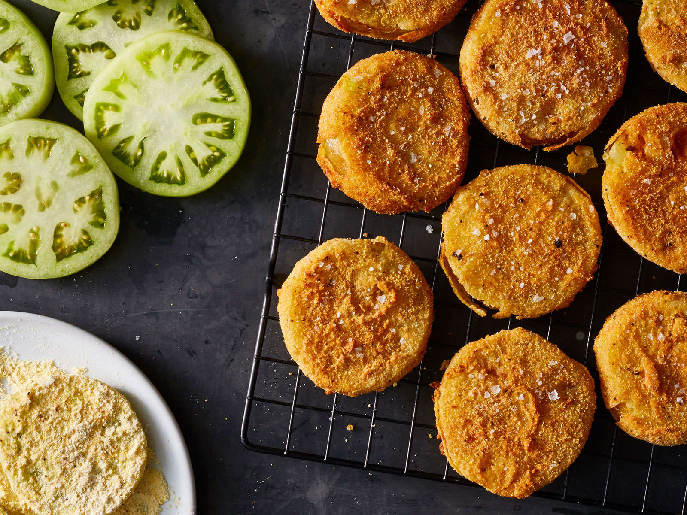

Fried Green Tomatoes

The Best Summer Sidedish from the South
I may not be southern (just midwestern...) but I can fry up some mean green tomatoes, let me tell you. I've gotten a little experiemental with it, when I was out of an ingredient and had to improvise. But you know what they say—"neccesity if the mother of invention." Damn if that ain't true. You won't be able to resist eating just one more of these. And if you have any leftover, just pop them in the air-fryer or oven to reheat. They make a grat snack, too!
Give it a try!
Ingredients
- 3-4 green tomatoes, sliced
- 1 cup (ish) corn flake crumbs (You can buy a box of already crumbed corn flakes, or just take some aggression out on the cereal. Up to you.)
- 1/2 cup corn meal
- 1/4 cup flour
- 1 tbsp corn starch
- salt and pepper
- 2 tsp garlic powder
- 1 tsp dried thyme
- vegetable oil
- 3-4 eggs, beaten
Directions
This is just how I make 'em. There's probably something I'm doing that will make your grammy roll in her grave, but oh well. She's dead and I'm hungry.
- Slice the tomatoes about 1/4 to 1/2 inch thick. I like to do mine a little thinner, just so I can make more.
- Mix dry ingredients (corn flake crumbs, corn meal, flour, corn starch, salt and pepper, garlic powder and thyme) in a nice-sized bowl. They wider the bowl, the better. You can even use a pie pan for this.
- Pour beaten eggs into a seperate bowl and place the two bowls as close together as you can. Leaving too much space between them can lead to a mess.
- Get a large plate ready for the fried green tomatoes to rest on by covering it in some paper towels. They will help absorb some of the oil later.
- Pour vegetable oil into a frying pan until it's covering the pan about 1/4 inch deep (thicker if your tomato slices are thicker). Heat the oil on medium-high until it's hot. You can check the oil temperature by flicking a couple drops of cold water from your fingers into the oil. If the oil pops when the water hits it, it's ready.
- Using two forks (I swear it's better than tongs—like tiny hands!) take one tomato slice at a time and dip first in to the dry mixture (coating it as much as you can), then dip it into the eggs (again, coating it as much as you can), then back to the dry mixture. On the final dry coating, I like to place the tomato flat-side down and pat it with the back of the fork, then flip it over and do the same to the other side. You want the dry mixture to be packed onto the tomato so you don't lose the breading when it's frying.
- Place the coated tomato slice into the oil. I can usually coat and add 4-5 tomato slices to the pan before needing to flip the first one. When they are golden brown on the bottom, flip them over and fry until that side is also golden brown.
- As they finish frying, move them the the paper towel on the plate.
- Eat those suckers up! But be careful; they're gonna be hot.